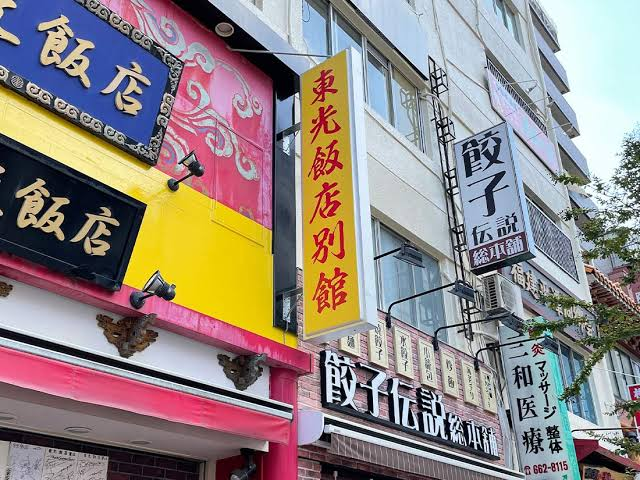

<!DOCTYPE html>
<html lang="jp">
<head>
    <!-- ⑥↓タイトルを変えてみよう -->
    <title>カズトの課題</title>
    <!-- ⑤スタイルシートの設定をしよう -->
    <!-- h1.htmlからある行をコピペしてくればOK -->
</head>
<body><br>
</body><div>アクセサリー屋の看板で派手なデザインでとても目を引かれました。</div>
<br>
<div>一般的な看板ではなく地面にスクリーンのように映し出されている広告で近くに行ってみたくなるし興味を惹かれました。</div>
<br>
<div>横浜中華街の看板です。中国語で書かれていたので他国に行っているような感覚で目を惹かれました。</div>

    
</body>
</html>